Reconhecimento público e institucional
Prêmio Legislativo
O Movimento Meninas Olímpicas atua junto a casas legislativas e órgãos públicos para ampliar o reconhecimento de meninas premiadas em olimpíadas científicas e transformar esse reconhecimento em políticas permanentes.
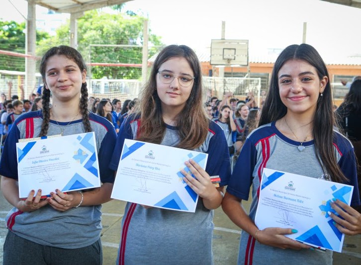
Cerimônias de Premiação
Prêmio Meninas Olímpicas em diferentes espaços públicos
Registros de cerimônias realizadas no Rio Grande do Sul, Espírito Santo, Paraná e Câmara de Vereadores de Santa Maria.
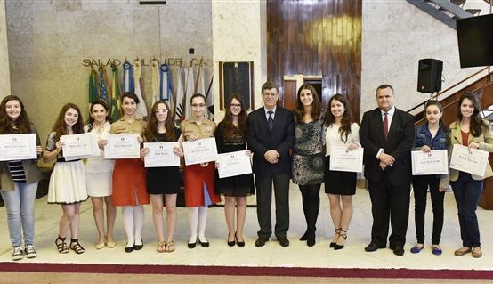
2016
Rio Grande do Sul
Prêmio Meninas Olímpicas
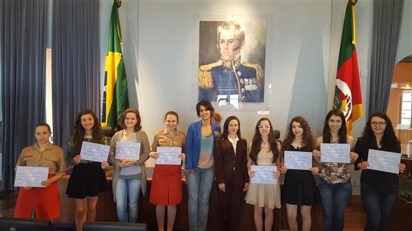
2017
Rio Grande do Sul
Prêmio Meninas Olímpicas
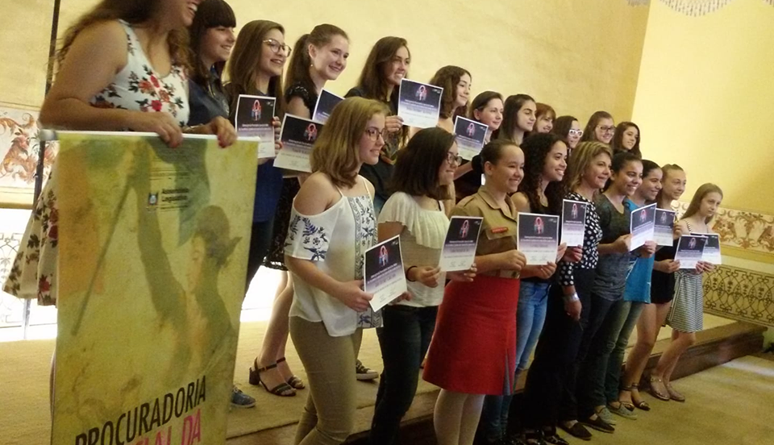
2018
Rio Grande do Sul
Prêmio Meninas Olímpicas
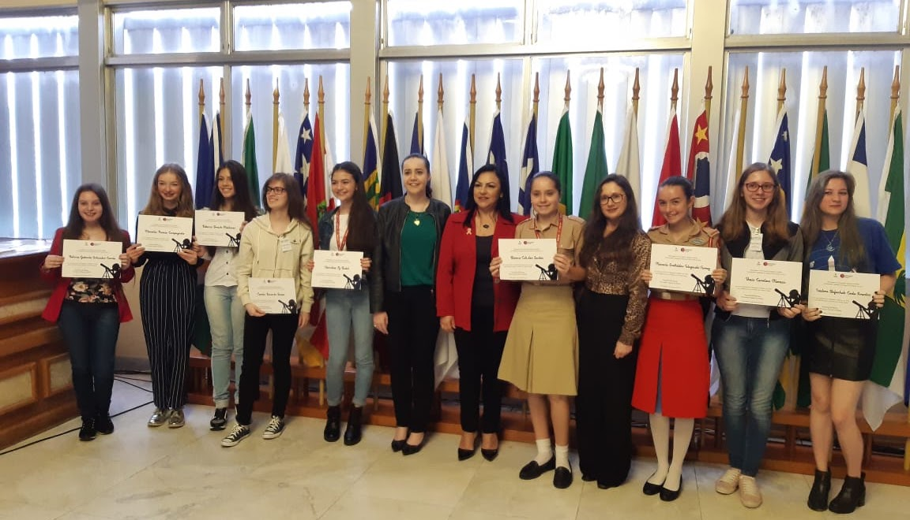
2019
Rio Grande do Sul
Prêmio Meninas Olímpicas
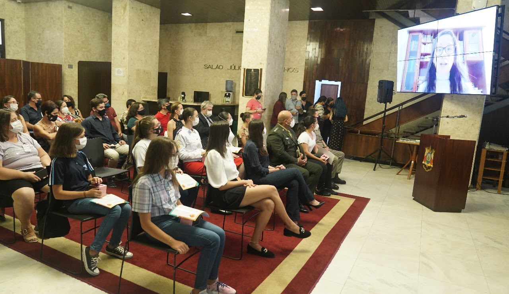
2022
Rio Grande do Sul
Prêmio Meninas Olímpicas
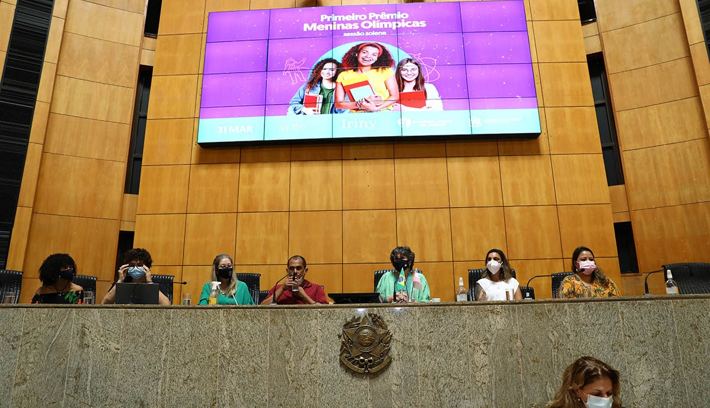
2022
Espírito Santo
Prêmio Meninas Olímpicas
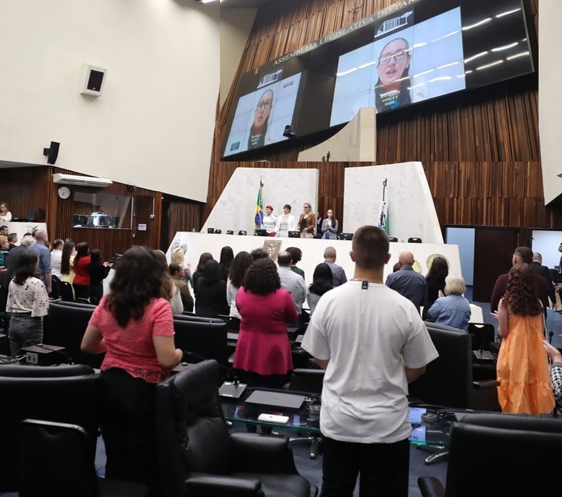
2023
Paraná
Prêmio Meninas Olímpicas
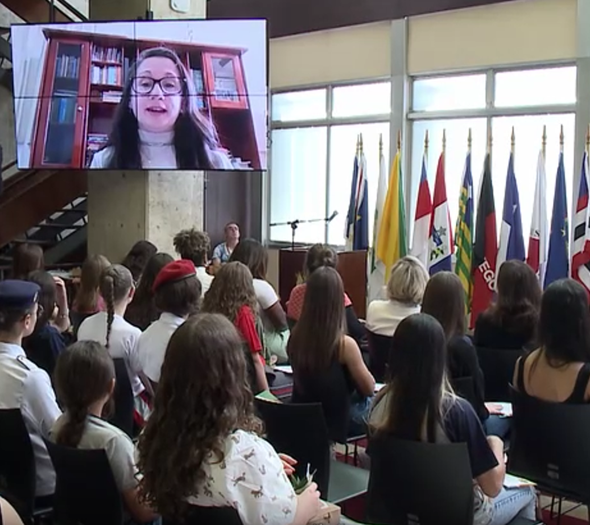
2023
Rio Grande do Sul
Prêmio Meninas Olímpicas
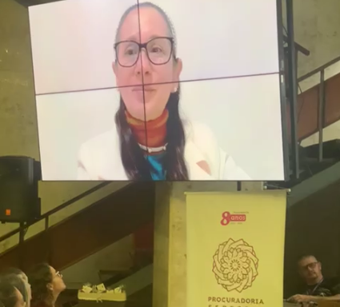
2024
Rio Grande do Sul
Prêmio Meninas Olímpicas
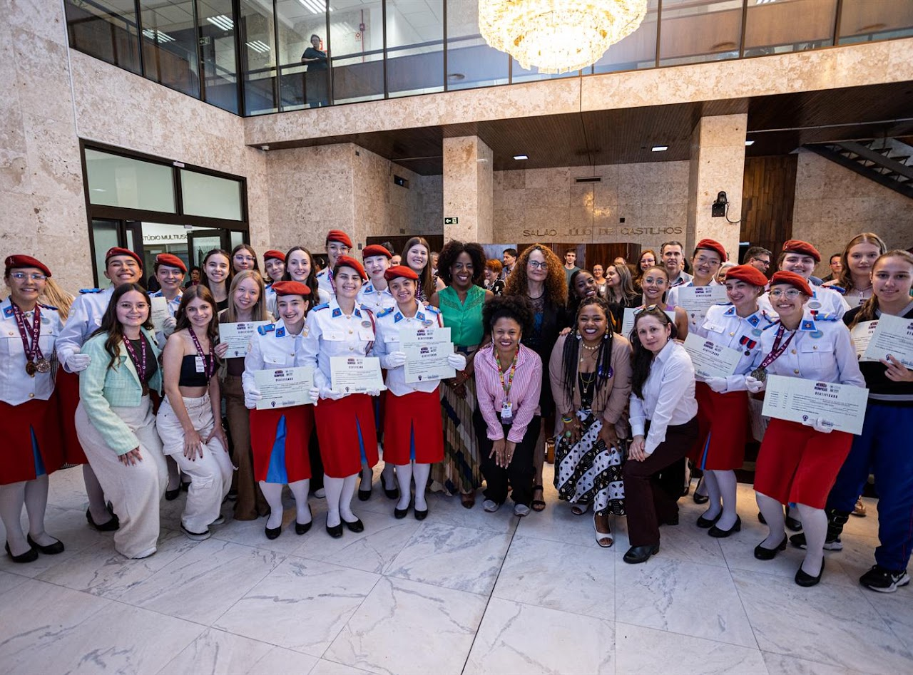
2025
Rio Grande do Sul
Prêmio Meninas Olímpicas
2025
Câmara de Vereadores de Santa Maria
Prêmio Meninas Olímpicas
Projetos legislativos
Do reconhecimento simbólico à criação de políticas públicas
Criação do Prêmio Meninas Olímpicas
O Movimento Meninas Olímpicas propôs uma minuta de projeto de lei aos senadores para a criação do Prêmio Meninas Olímpicas. O projeto está tramitando no Senado Federal.
Senado pode criar prêmio para meninas que participam de olimpíadas científicasProjeto em tramitação
O Movimento Meninas Olímpicas propôs uma minuta de projeto de lei aos deputados federais para a criação do Prêmio Meninas Olímpicas. O projeto está tramitando na Câmara Federal.
Acompanhar o projeto na Câmara dos DeputadosProjetos estaduais
O Movimento Meninas Olímpicas propôs igualmente uma minuta de projeto de lei às Assembleias Legislativas para criação do Prêmio Meninas Olímpicas.
Projetos aprovados
Amazonas, Rio Grande do Sul, Mato Grosso do Sul, Espírito Santo e Paraná.
Projetos em andamento
Santa Catarina, Mato Grosso, Goiás, Roraima, Bahia, São Paulo e Rio de Janeiro.
Dia Estadual das Meninas Olímpicas
Mato Grosso do Sul.
Reconhecimento em âmbito municipal
- Dia Municipal das Meninas Olímpicas em Nova Lima, Minas Gerais.
- Prêmio Meninas Olímpicas na Câmara de Vereadores de Frederico Westphalen, Rio Grande do Sul, assim como o Prêmio Mulher Cidadã FW.
- Prêmio Meninas Olímpicas na Câmara de Vereadores de Santa Maria, Rio Grande do Sul.
- Prêmio Meninas Olímpicas na Câmara de Vereadores de Porto Alegre, Rio Grande do Sul.

Procuradoria Especial da Mulher
Homenagens às medalhistas de ouro do Rio Grande do Sul
Desde 2016, a Procuradoria Especial da Mulher da Assembleia Legislativa do Rio Grande do Sul, em conjunto com o Movimento Meninas Olímpicas, organiza homenagens às meninas medalhistas de ouro do estado.
Assembleia Legislativa do RS
Notícias sobre as homenagens
Histórico das matérias publicadas sobre as cerimônias e projetos relacionados ao Prêmio Meninas Olímpicas.
2016Parlamento homenageia meninas medalhistas olímpicas
2017Estudantes gaúchas são agraciadas com o Prêmio Meninas Olímpicas
2018Assembleia Legislativa presta homenagem a meninas medalhistas em ciências exatas
2019Projeto quer instituir o Prêmio Meninas Olímpicas
2020Projeto que incentiva participação de meninas nas olimpíadas científicas avança na AL
2021Assembleia aprova criação de prêmio para incentivar participação de meninas em olimpíadas científicas
2022Assembleia homenageia meninas que participaram de olimpíadas científicas
2023Entrega do Prêmio Meninas Olímpicas
2023Procuradoria da Mulher entrega certificados às medalhistas do Prêmio Meninas Olímpicas
2024Prêmio Meninas Olímpicas é entregue pela Procuradoria Especial da Mulher
2025Procuradoria Especial da Mulher entrega o Prêmio Meninas Olímpicas
2025Prêmio Meninas Olímpicas estimula participação feminina nas ciências exatas
FAPERGS
Prêmio Jovem Talento Científico Gaúcho
O Prêmio Jovem Talento Científico Gaúcho, criado em 2019, objetiva reconhecer estudantes de escolas públicas que conquistaram medalhas e menções honrosas em eventos de conhecimento nacionais e internacionais, estimulando a cultura da ciência e a carreira científica dos futuros profissionais.
A distinção é uma iniciativa do Programa Educar para Inovar, vinculado à SICT em parceria com a Secretaria Estadual de Educação (SEDUC) e apoio do Movimento Meninas Olímpicas.
Lançamento do Prêmio Pesquisador Gaúcho 2021 e do Prêmio Jovem Talento Científico Gaúcho


Meninas olímpicas de hoje serão as mulheres nos espaços de poder amanhã.
Desde 2016 incentivando as meninas olímpicas.